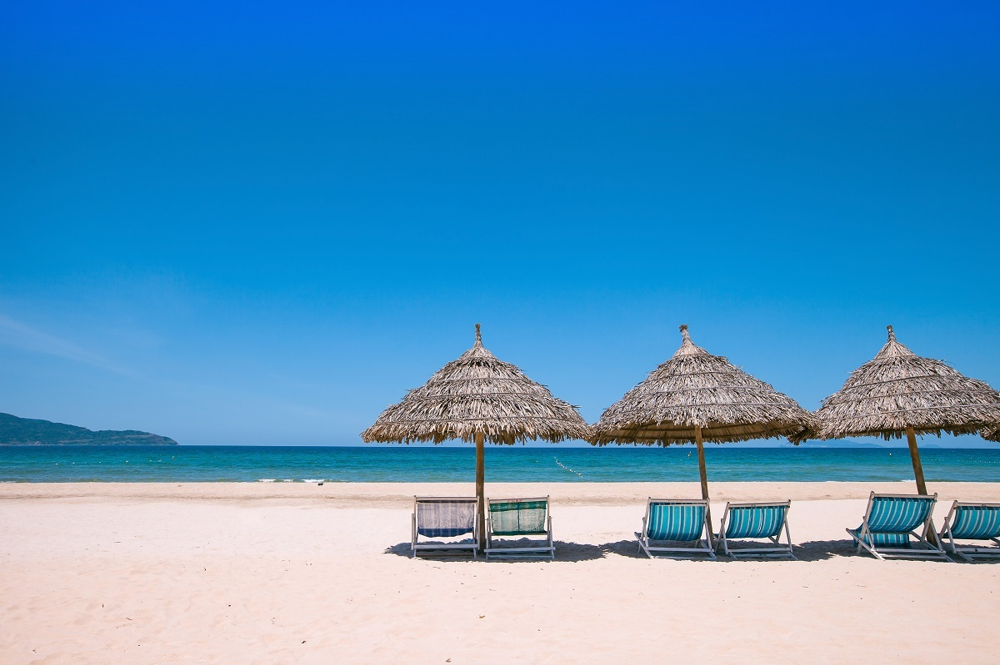

Lý do Google vinh danh Đà Nẵng là điểm đến hàng đầu
Phong cảnh đẹp, ẩm thực phong phú, người dân hiền hòa và mến khách, giúp Đà Nẵng đứng đầu danh sách điểm đến 2020 do Google bình chọn.

Đà Nẵng, nằm ở miền trung, thường được ưu ái với tên gọi "thành phố đáng sống nhất Việt Nam". Không chỉ có khoảng cách chia đều thủ đô Hà Nội và TP HCM, thành phố còn nằm ở trung tâm của 3 di sản thế giới UNESCO Cố đô Huế, Hội An và Mỹ Sơn.
Cảnh quan biển, núi, rừng
Thành phố sở hữu nhiều bãi biển đẹp, trải dài thoai thoải với cát trắng, nước trong xanh và sóng êm. Trong đó phải kể đến Mỹ Khê, từng được Forbes bình chọn là một trong 6 bãi biển quyến rũ nhất hành tinh. Trải dài khoảng 1 km từ bán đảo Sơn Trà đến Ngũ Hành Sơn, bãi biển gần trung tâm và thu hút đông du khách nhất. Ở đây còn có những dịch vụ như chèo thuyền chuối, motor nước, dù kéo...
Du khách tới đây không nên bỏ lỡ "viên ngọc quý" bán đảo Sơn Trà. Bán đảo có 3 mặt giáp biển, nằm cách trung tâm thành phố khoảng 10 km về hướng đông bắc, thuộc phường Thọ Quang, quận Sơn Trà. Có tổng diện tích hơn 4.400 ha, đây là nhà của khoảng 1.000 loài thực vật bậc cao, hàng trăm loài động vật. Trong đó có 22 loài quý hiếm như chồn bạc má, mèo rừng... Bán đảo cũng được biết đến với tên nhà của "nữ hoàng linh trưởng" với hàng trăm cá thể voọc chà vá chân nâu.
Thành phố của những cây cầu
Đà Nẵng được mệnh danh là thành phố của những cây cầu, nhiều trong số đó trở thành biểu tượng, điểm tham quan du lịch thu hút trong thành phố.
Cầu Rồng được khởi công xây dựng từ năm 2009 và chính thức khánh thành, đưa vào sử dụng năm 2013. Cây cầu dài hơn 660 m, mô phỏng hình con rồng thời Lý vươn ra biển là một trong những điểm đến check-in nhiều nhất trong thành phố. Thời điểm đẹp nhất để ngắm cầu Rồng là vào buổi tối, khi cả đoạn đường rực sáng với ánh đèn nhiều màu. Du khách có thể chiêm ngưỡng rồng phun nước, phun lửa vào tối thứ 7 và chủ nhật lúc 21h.

Bên dưới cầu Rồng và cây cầu Tình Yêu, nơi được nhiều du khách trẻ đến chụp ảnh. Cầu được thiết kế giống công viên, với đường đi bộ hướng về phía sông Hàn, trang trí bởi nhiều cột đèn lồng trái tim đỏ. Ở đây, có một trải nghiệm mà bất cứ cặp đôi nào cũng muốn thử là treo khóa khắc tên trên thành cầu, thể hiện mong muốn về tình yêu bền chặt, thủy chung. Giá của mỗi ổ khóa khoảng 50.000 - 200.000 tùy hình dáng, yêu cầu khắc tên.
Các điểm vui chơi, giải trí
Nằm bên cầu Thuận Phước, tọa lạc trên đường Lê Văn Duyệt, quận Sơn Trà, công viên Kỳ quan thế giới là điểm chụp ảnh đậm chất châu Âu giữa lòng thành phố. Ở đây có những bức tượng, mô phỏng lại các biểu tượng nổi tiếng thế giới như tượng Nữ thần Tự do, Mỹ; Tháp Eiffel, Paris, Pháp; chùa Một Cột, Hà Nội; Vạn Lý Trường Thành, Trung Quốc...